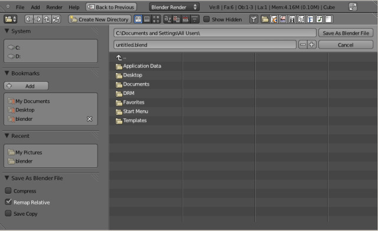

保存文件¶
参考
编辑器: 信息
菜单: 文件
有几种用于保存blend文件的方法，效果稍有不同:
- 保存
Ctrl-S,Ctrl-W - 将现有的Blend文件保存在本身。
- 另存为
Ctrl-Shift-S,F2 - 选择要保存到Blend的文件。
- 保存副本
Ctrl-Alt-S - 选择要保存的Blend，但是保存结束后返回原文件编辑界面。这可以用来在不修改原始文件的情况下，备份当前的工作状态。
如果文件名没有以 '.blend' 结尾，自动追加扩展名。如果相同的名称的文件已经存在，该文本框将变红，警告将覆盖该文件。

Tip
使用文件名右边的 + / - 按钮，或者 NumpadPlus/ NumpadMinus 可以调整文件名结尾的数字。 (如：将 file_01.blend 修改为 file_02.blend)。